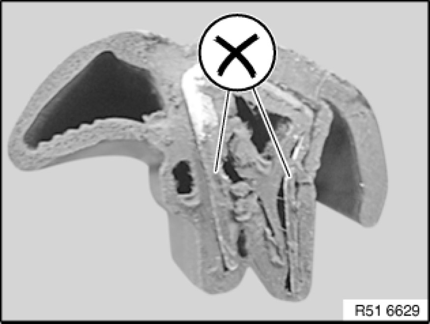

51 70 ... Fitting Seals
51 70 ... - Fitting seals

Note:
All seals on the vehicle must be removed with the utmost care. Incorrect fitting may result in among other things wind noises and water ingress, and may compromise closing and opening comfort.
- The following instructions always apply:
Seals which are attached to the side frame can be removed and fitted as often as desired.
- Seals must not be damaged or cracked.
- The clamping area must be pressed together by hand to such an extent that rigid attachment to the side flange is still possible. The sides of the seal are permitted to touch each other slightly. A fully compressed seal is not permitted.

- A special tool to press the clamping area together is not needed. Careful fitting by hand is sufficient.
- The seals must always be fitted over their full extent. There is no defined pressing force.
- If seals are repeatedly removed and fitted in the rear lid area, a new seal must be fitted (water ingress in event of sheet flaws).
- Seals must be checked after fitting for correct seating. If necessary, the seals must be lifted over the adjacent components with a suitable tool. Adjacent components must not be damaged.
- Seals must be replaced when the metal insert in the seal is visible (corrosion).
- The clamping area must be uniform.
- Joint seals which are fitted with plastic clips must rest rigidly on the body. Otherwise, the clips or the joint seal must be replaced.